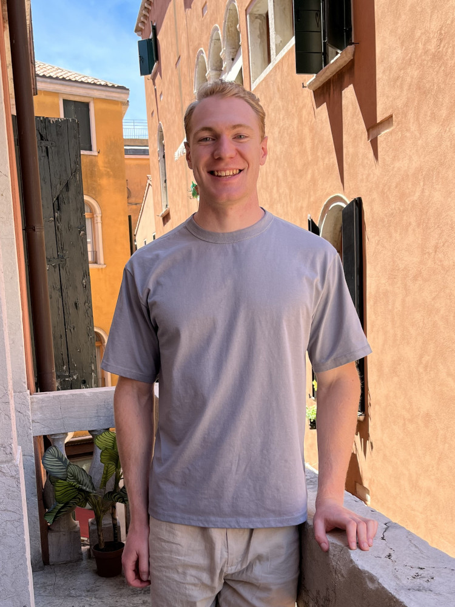

kennybaker729@gmail.com | ames, ia
I currently work as an appraisal technician at the City of Ames Assessor's Office. I graduated from Iowa State University in December 2021 with a BA in History, and my senior thesis focused on the intersections of colonialism, race, and disease in the Philippines.
